One page per AU slide: the story with the gaps marked, the worked steps, where to read, how to open the slide in class, and Test me. Orange underlined words are the gaps the class fills.
1
Lecture 2: Energy, energy transfer, and general energy analysis
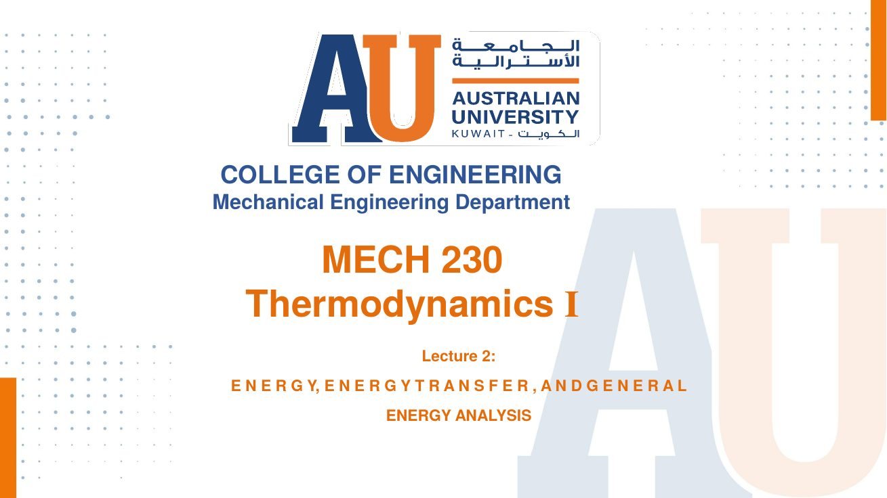
Where we are
Lecture 1 gave us the vocabulary: system and surroundings, properties, state, process. We also met the three ways energy moves: heat, work, and mass flow. What we never did is make them balance.
Today, in three blocks
Block 1 (slides 2 to 10): the first law. Energy in minus energy out equals the change inside. One equation, closed and open systems, three worked examples.
Block 2 (slides 11 to 16): efficiency. How much of what you pay for comes out as what you wanted. Devices in series multiply.
Block 3 (slides 17 to 56): pure substances. Water refuses to follow one simple formula, so we learn to read its tables, then we solve real devices with them: turbines, throttles, nozzles, mixing chambers.
Bottom line
One law, one skill: balance the energy, and know where on the map the substance is before you open a table.
Where to read: Çengel 9e Ch. 2 and 3 overview [10e Ch. 2, 3]
How I teach it: Ask the class: when your phone charges, where does the wall energy end up? Collect three answers, then promise the balance sheet.
Test me
What are the three ways energy can cross a system boundary?
Heat, work, and mass flow (mass carries energy with it).
What does the first law forbid?
Creating or destroying energy; it can only change form or move.
Why do we need property tables for water?
No simple equation covers liquid, mixture and vapour; the measured values live in tables.
2
Everything starts with the first law
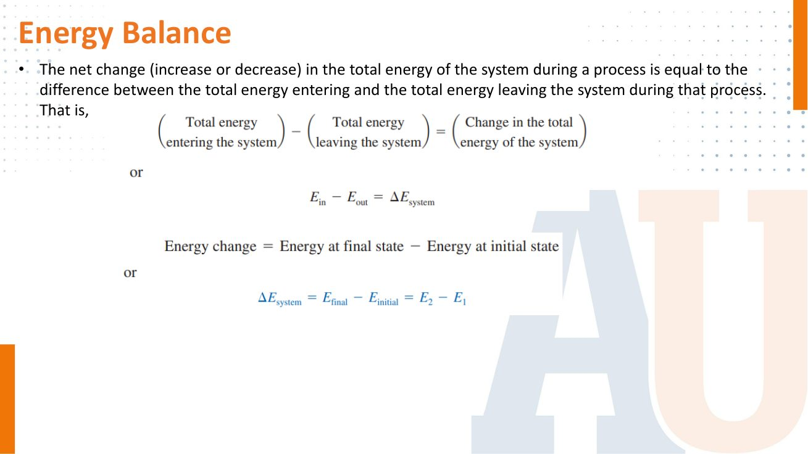
The first law of thermodynamics
Energy cannot be created or destroyed. It can be transferred between the system and the surroundings, or converted from one form to another.
What that implies for any system
If more energy enters than leaves, the system must gain energy; if more leaves than enters, it must lose energy.
( Total energy entering ) − ( Total energy leaving ) = ( Change in the total energy of the system )
For the systems we study, the total energy stored in the system is E = U + KE + PE: Internal energy U (molecular motion and bonds), Kinetic energy KE = ½ m V², Potential energy PE = m g z.
ΔE_system = ΔU + ΔKE + ΔPE
The distinction that runs the whole chapter
U, KE and PE describe energy the system has. Heat and work, which come next, describe energy crossing the boundary.
Where to read: Çengel 9e §2-6, Eq. 2-32 [10e §2-6]
How I teach it: Open with the bank-account picture: deposits, withdrawals, balance. Energy obeys the same arithmetic.
Test me
A room gains 300 kJ by heat and loses 200 kJ by work out. What is ΔE?
ΔE = +300 − 200 = +100 kJ. In minus out, always.
Is 'energy balance' a new law or bookkeeping?
Bookkeeping of the first law: what is not stored went out.
What does a negative ΔE mean physically?
The system ended with less stored energy: more left than entered.
3
Energy in and out: Q, W and the sign convention
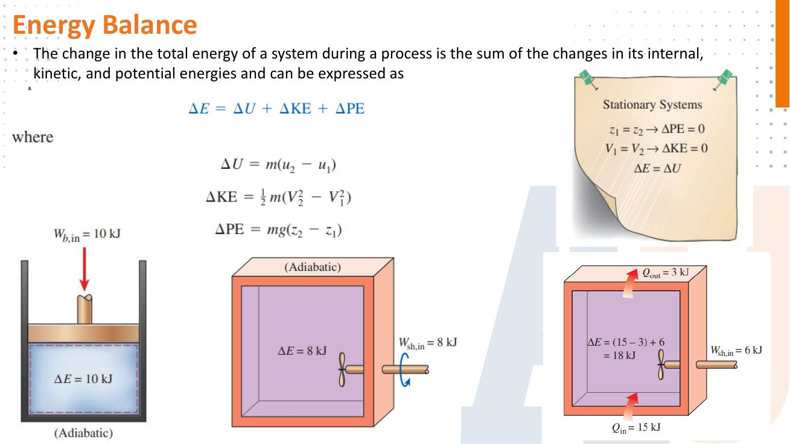
Last slide: what the system has. This slide: how energy crosses the boundary
ΔE_system = ΔU + ΔKE + ΔPE is stored energy. For a closed system (no mass crossing) energy has only two ways across the boundary: heat, Q and work, W.
Heat Q: energy transferred because of a temperature difference. Work W: energy transferred by any other mechanism: shaft work, moving-boundary work, electrical work.
A system does not contain heat or work. It contains energy; heat and work describe how energy is transferred.
Sign convention (this course): direction decides the sign
Heat in ⇒ Q + Heat out ⇒ Q − Work done ON the system (in) ⇒ W + Work done BY the system (out) ⇒ W −
±Q±W = ΔU + ΔKE + ΔPE (say the direction in words, then write the sign)
Check it on the right-hand box of this slide
Heat in 15 kJ, heat out 3 kJ, shaft work in 6 kJ ⇒ ΔE = (+15) + (−3) + (+6) = 18 kJ (not 15 + 3 + 6 = 24: direction, not magnitude)
No change in bulk speed or elevation
V₁ = V₂ ⇒ ΔKE = 0 z₁ = z₂ ⇒ ΔPE = 0 ⇒ ±Q ± W = ΔU → the equation on the next slide
Where to read: Çengel 9e §2-6, Eq. 2-33 [10e §2-6]
How I teach it: Point at the three terms and ask which die for a tank bolted to the floor.
Test me
A car accelerates on a flat road. Which of ΔU, ΔKE, ΔPE moves?
ΔKE (and a little ΔU in the engine); ΔPE = 0 on a flat road.
For a sealed rigid tank sitting still, what does ΔE reduce to?
ΔU: nothing moves and nothing climbs, so KE and PE drop out.
Which term is usually the giant in heating problems?
ΔU; kinetic and potential changes are tiny next to internal energy.
4
Closed system: assemble the equation
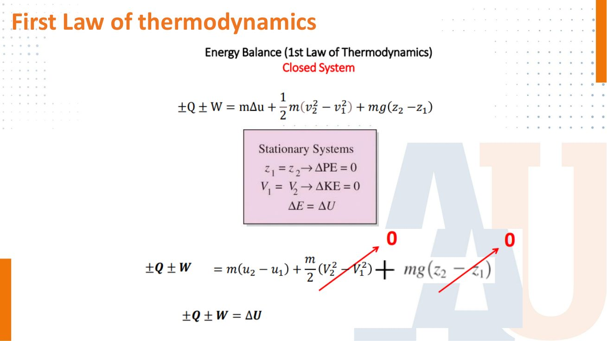
We are not learning a new law; we are assembling the last two slides
1. E_in − E_out = ΔE_system
2. Closed ⇒ no mass crosses ⇒ transfers are heat and work: (Q_in − Q_out) + (W_in − W_out) = ±Q ± W
3. ΔE_system = m(u₂ − u₁) + ½ m (V₂² − V₁²) + m g (z₂ − z₁)
4. ±Q ± W = m(u₂ − u₁) + ½ m (V₂² − V₁²) + m g (z₂ − z₁) [kJ]
Sign reminder (slide 3 owns it): in ⇒ +, out ⇒ −, for both Q and W.
½ṁ(V₂² − V₁²) and ṁg(z₂ − z₁) are changes in the rate of KE and PE carried by the flowing fluid between inlet and outlet, not energy stored inside the device.
Units: [kg/s] × [kJ/kg] = kW. V²/2 and g z come out in J/kg ⇒ divide by 1000 before adding to h in kJ/kg.
Where to read: Çengel 9e §5-2, 5-3 steady-flow energy balance [10e §5-3]
How I teach it: Start from the question: what changes when the fluid moves through instead of sitting inside?
Test me
Why does h = u + Pv appear for flowing fluid but not in a tank?
Flow pushes its way in and out: the Pv flow work rides with every kg. In a tank nothing flows.
What does 'steady' buy us?
No accumulation: everything per unit time, in = out.
Why divide V²/2 by 1000?
To convert m²/s² into kJ/kg (1 kJ/kg = 1000 m²/s²).
6
Many inlets, many outlets: two balances, not one
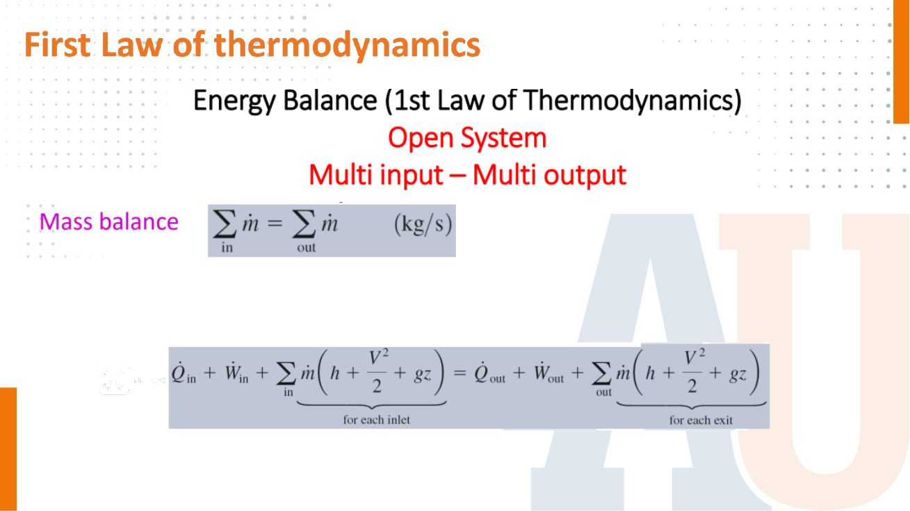
Why this slide exists
Real devices can have several streams: a mixing chamber has two in, one out; an extraction turbine has one in, two out. So we account for every stream.
First balance: mass (steady ⇒ no accumulation)
Σ ṁ_in = Σ ṁ_out [kg/s]
What each stream carries, per kg
h + V²/2 + g z with h = u + P v
Second balance: energy (steady ⇒ dE_CV/dt = 0 ⇒ in = out)
Q̇_in + Ẇ_in + Σ_in ṁ ( h + V²/2 + g z ) = Q̇_out + Ẇ_out + Σ_out ṁ ( h + V²/2 + g z )
Do not mix sign methods: in this form every quantity is a positive magnitude on the IN side or the OUT side. Never also write Q_out as a negative number.
If the device were not steady, the storage term dE_CV/dt would stay on the right.
Collapse check
One inlet, one outlet ⇒ the sums have one term each ⇒ AU slide 5. No mass at all ⇒ AU slide 4. One law.
The recipe from here on
Draw the control volume → every mass, heat and work arrow → mass balance → energy balance → cross out terms only when the physics justifies it.
Where to read: Çengel 9e §5-1, 5-2 mass and energy balances [10e §5-2]
How I teach it: Draw a tee junction and ask where the mass goes; the multi-stream sums write themselves.
Test me
What is conserved at a junction of three pipes?
Mass: Σṁ in = Σṁ out. And energy, each stream carrying its own h + V²/2 + gz.
When do the sums collapse to the single-stream equation?
One inlet, one exit: each sum has one term.
A mixing chamber has 2 in, 1 out. How many balance equations do we get?
Two: one mass, one energy; enough for two unknowns.
7
Example: the cooled, stirred tank
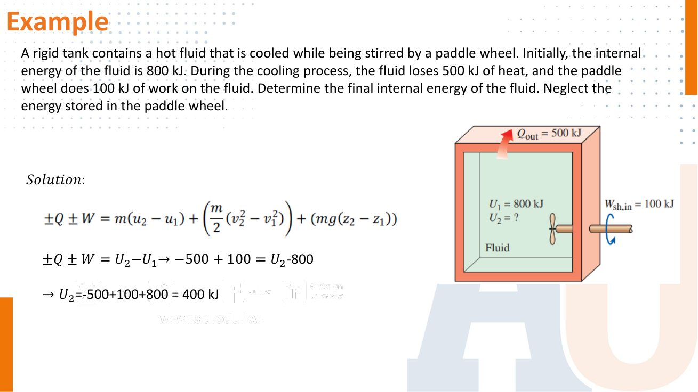
Read it like an engineer
A rigid tank, sealed: a closed system. Inside, a hot fluid with U₁ = 800 kJ. Two things happen at once: it loses 500 kJ of heat, and a paddle wheel does 100 kJ of work on it.
Missing: the final internal energy U₂.
Strategy
Rigid and stationary kills ΔKE, ΔPE and boundary work in one stroke, so the whole first law is three numbers and one sign decision per number. Sanity check before solving: more leaves than enters, so U₂ must come out below 800.
Bottom line
First law in one breath: what came in, minus what went out, is what stayed.
Example · Cooled, stirred rigid tank (AU slide 7)
Step 1 Draw the system: what is inside the dashed line?
System: CLOSED system (fixed mass): no mass crosses the boundary. The water in the sealed rigid tank is the system
Draw the tank, then a dashed boundary around the fluid inside. The tank is sealed: no mass crosses the boundary, so this is a CLOSED system (a fixed mass). Energy still crosses: heat leaves, paddle work enters.
Step 2 Assumptions, then watch the full balance shrink
Assumptions: 1) stationary tank, so ΔKE = ΔPE = 0; 2) rigid walls, so no boundary work, the only work is the paddle. AU sign convention: in = +, out = −.
The tank lost more by heat (500) than it gained by stirring (100), so the energy had to drop: 800 → 400. A final value above 800 would have been the sign of a sign error.
\[\Delta U = -400\ \text{kJ} < 0 \;\checkmark\]
\[\text{net } = -500+100 = -400\ \text{kJ}\]
Where to read: Çengel 9e §2-6, in the style of Ex. 2-10 [10e §2-6]
How I teach it: Have them guess U₂ before solving: bigger or smaller than 800? Why?
Test me
Why is there no boundary work here?
The tank is rigid: the walls do not move, so no P dV work.
Flip it: the paddle extracts 100 kJ instead. New U₂?
U₂ = 800 − 500 − 100 = 200 kJ.
Which sign convention are we using and what is the textbook's?
AU: in = +, out = −. The book writes Q − W with W positive out; same physics.
8
Example: the heated, stirred pan
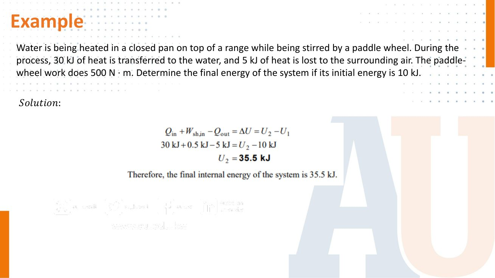
Read it like an engineer
Same game, more flows. A closed pan of water: 30 kJ of heat in from the range, 5 kJ lost to the air, and 500 N·m of paddle work in. Initial energy E₁ = 10 kJ.
The only trap is the unit: 500 N·m = 0.5 kJ, not 500 kJ.
Strategy
List every arrow with its sign before touching the calculator: +30, −5, +0.5. One line of first law finishes it.
Bottom line
Write the signs first, calculate second: that order prevents almost every first-law mistake.
Example · Heated, stirred pan (AU slide 8)
Step 1 Draw the system: the water in the pan
System: CLOSED system (fixed mass): no mass crosses the boundary. Closed system: the water; heat in from the range, heat lost to the air
The system is the water in the pan: no mass enters or leaves, so CLOSED. Three energy flows cross the dashed line: 30 kJ heat in from the range, 5 kJ heat out to the air, 0.5 kJ of paddle work in (500 N·m).
Step 2 Assumptions, then the full balance shrinks
Stationary pan: ΔKE = ΔPE = 0, so ΔE = ΔU + nothing. No work leaves.
Where to read: Çengel 9e §2-6, in the style of Ex. 2-11 [10e §2-6]
How I teach it: Ask who noticed the N·m trap before revealing it; reward the catch.
Test me
Why is the 500 N·m worth only half a kJ?
1 N·m = 1 J; 500 J = 0.5 kJ. Units before arithmetic.
Net heat for this pan?
+30 − 5 = +25 kJ into the system.
If the pan were uncovered and steam escaped, could we still use this closed-system balance?
No: mass would cross the boundary; it becomes an open system.
9
Example: the steam turbine (read it like an engineer)
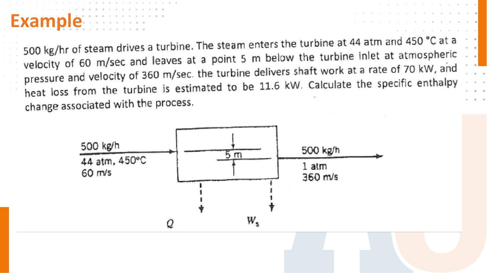
Read it like an engineer
Our first open system. Steam flows through a turbine at 500 kg/h. In: 60 m/s. Out: 360 m/s, and the exit sits 5 m below the inlet. The shaft delivers 70 kW and the casing loses 11.6 kW of heat.
Missing: the change in specific enthalpy Δh = h₂ − h₁. Notice: no temperatures, no tables; just the balance.
Strategy
Steady flow, one in, one out: the slide-5 equation. Order of attack: ṁ first (everything becomes per second), then each fluid term in kJ/kg, then solve for Δh. Sanity checks: a turbine extracts energy, so Δh must come out strongly negative; the elevation term should be invisible; the kinetic term noticeable, because 360 m/s is fast.
Bottom line
Compute all three fluid terms once; learn which ones matter, then you may drop the rest for life.
Example · Steam turbine, Δh (AU slides 9 and 10)
Step 1 Draw the system: a turbine with one inlet, one exit
System: OPEN system (control volume): mass crosses the boundary. Open system (control volume), steady: analyse in rates
Steam flows across the dashed boundary, so this is an OPEN system (a control volume), steady state. In this example nothing is neglected: the fluid carries h, kinetic AND potential energy, and both heat and shaft work leave.
Step 2 Make the flow rate per second
Open system, steady. Everything becomes per unit time, so first ṁ.
Watch the units. h is in kJ/kg, but V²/2 lands in m²/s² = J/kg (joules, not kilojoules), so divide by 1000 (1 kJ = 1000 J) before adding it to h. gz is the same story: 9.81 × metres = J/kg. Exit is 5 m below the inlet: z₂ − z₁ = −5 m.
Enthalpy drop 650, kinetic 63, potential 0.05. The elevation term never mattered; the velocity term did, because 360 m/s is fast. This is the habit: compute all three once, then learn which ones to drop.
Where to read: Çengel 9e §5-3, turbine style [10e §5-4]
How I teach it: Before solving, ask: which of the three fluid terms do you expect to be invisible? Vote, then verify.
Test me
Why does Δh come out negative?
The steam gives up energy as shaft work and heat; its enthalpy must fall.
Which term was negligible and which was not?
gΔz ≈ 0.05 kJ/kg negligible; ΔKE = 63 kJ/kg not, because 360 m/s is fast.
Why convert 500 kg/h to kg/s?
The powers are in kW = kJ/s; time units must match.
10
The official solution
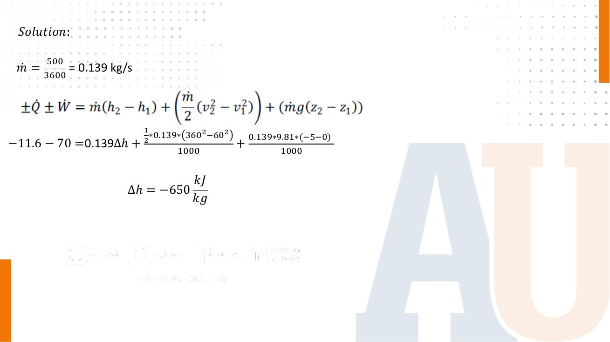
This is the AU solution of the turbine example we worked on slide 9: same ṁ = 0.139 kg/s, same Δh ≈ −650 kJ/kg. Press Next.
Where to read: Çengel 9e §5-3 [10e §5-4]
How I teach it: One line: our numbers, their layout. Move on.
Test me
Point at the −650: which three ingredients built it?
−587 from work and heat per kg, −63 from kinetic energy, +0.05 from elevation.
11
Efficiency: define the output and the input first
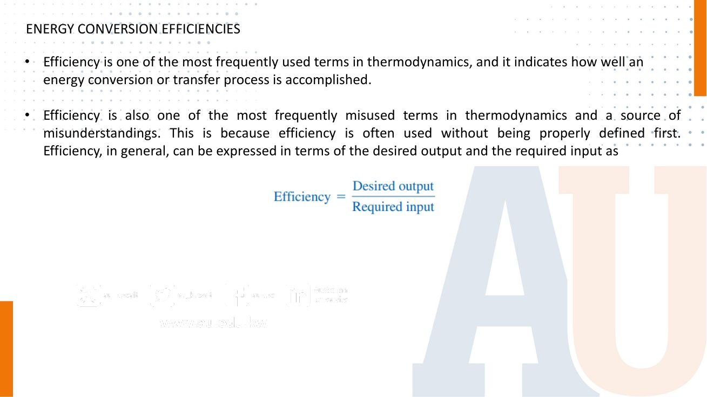
What the word means (Çengel §2-7, Eq. 2-41)
Efficiency tells us how well an energy conversion or transfer process is accomplished:
η = desired output ÷ required input
Why the book calls it 'one of the most misused terms'
The number is meaningless until both words are defined. Same device, different definition of 'desired output' ⇒ different efficiency.
Every efficiency of a real device lies between 0 and 100 %. 0 % means the device only produced waste heat (it behaves like a resistance heater).
Define them for devices you know
Water heater: output = heat delivered to the water, input = energy in the fuel or electricity. Book values: gas ≈ 55 %, electric ≈ 90 %.
Electric motor: output = mechanical (shaft) power, input = electric power. Generator: the reverse.
Power plant: output = net electric work, input = heating value of the fuel burned.
Ask
The electric heater is 90 % efficient and the gas heater 55 %, yet the gas heater costs less to run per year. How can both be true? Efficiency is a ratio of energies; it says nothing about the price per kJ of the input.
Where to read: Çengel 9e §2-7 [10e §2-7]
How I teach it: Hook: a 1000 W heater converts all 1000 W to heat. Is it 100 % efficient? For heating, yes.
Test me
Efficiency in five words?
Useful output over required input.
Why is efficiency 'the most misused term'?
Because 'useful' depends on the purpose: the same device scores differently for different jobs.
Can the first law alone give an efficiency?
No: it says energy survived, not whether it came out in the wanted form.
12
Energy converter: what the two laws say
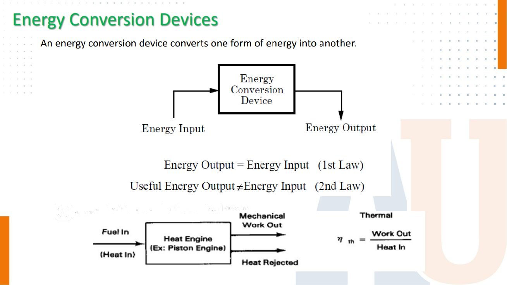
The generic converter (box with one arrow in, one arrow out)
First law: energy output = energy input, always. Nothing is lost in total.
Second law: the useful energy output is always less than the input. Part of the input always leaves as waste heat (rejected heat).
Heat engine (the bottom picture)
Fuel burns ⇒ heat in Q_in. The engine gives mechanical work W_out and must reject heat Q_rej to a cooler body.
How I teach it: Collect device examples from the class and sort them into input → output boxes live.
Test me
An energy conversion device, in one sentence?
Takes energy in one form, hands most of it on in another.
First law vs second law for these devices?
Output energy = input energy (first law); useful output < input (second law).
Name a device where the 'loss' is the product.
A heater: the heat is the point.
13
Four converters: what goes in, what comes out
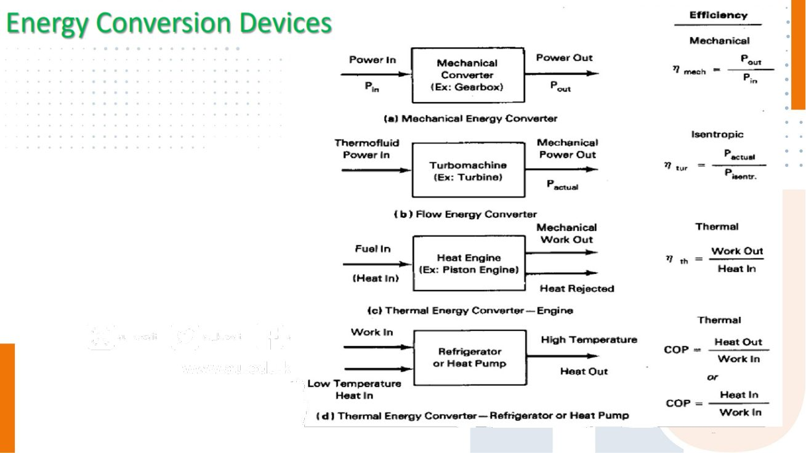
One idea for all four
An energy conversion device takes one form of energy in and gives another form out. Its efficiency is always what comes out ÷ what goes in, in the same units (power ÷ power, or energy ÷ energy).
Read each row of the slide: in → device → out
(a) Gearbox: mechanical power in → mechanical power out. η_mech = P_out ÷ P_in. (The difference is lost as friction heat.)
(b) Turbine: fluid power in (hot steam or gas) → mechanical (shaft) power out. η_tur = P_actual ÷ P_isentropic, i.e. what the real turbine gives ÷ what a perfect turbine would give.
Where to read: Çengel 9e §2-7 [10e §2-7]
How I teach it: Walk the four boxes left to right, asking in/out for each before revealing.
Test me
Gearbox: what in, what out?
Mechanical in, mechanical out: η = P_out/P_in.
Which converter uses COP instead of η, and why?
Refrigerator/heat pump: useful output can exceed paid input, so 'efficiency' would exceed 1.
A heat engine's unwanted output?
Heat rejected to the surroundings.
14
Example: the electric motor
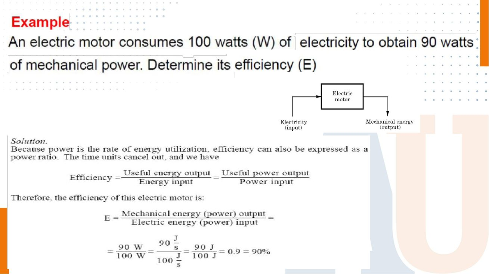
Read it like an engineer
A motor consumes 100 W of electricity and delivers 90 W of mechanical power. One number missing: the efficiency.
Strategy
Useful out over paid in. Powers work exactly like energies here, because the time units cancel.
Bottom line
Efficiency = what you wanted ÷ what you paid; the missing 10 W left as heat.
Example · Electric motor efficiency (AU slide 14)
Step 1 Efficiency is useful out over paid in
\[\eta=\frac{\text{useful energy output}}{\text{energy input}}=\frac{\dot W_{\rm mech,out}}{\dot W_{\rm elect,in}}\]
\[\eta=\frac{90\ \text{W}}{100\ \text{W}}=0.90\]
\[\eta_{\rm motor}=90\,\%\]
Step 2 Where did the 10 W go?
Not destroyed: it leaves as heat from the windings and friction. The first law still balances; efficiency only says how much came out in the form we wanted.
\[\dot Q_{\rm loss}=100-90=10\ \text{W}\]
Where to read: Çengel 9e §2-7 [10e §2-7]
How I teach it: Give the class 30 seconds to answer before you reveal: this one they can all get.
Test me
η of a pump that takes 2 kW and delivers 1.5 kW of flow power?
75 %.
Does η = 90 % break the first law?
No: all 100 W are accounted for, 90 W shaft + 10 W heat.
Why can we use watts instead of joules in the ratio?
Both powers are per second; the seconds cancel.
15
A chain of devices: efficiencies multiply
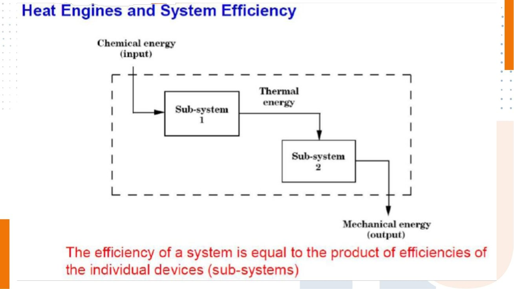
Why
The output of device 1 is the input of device 2. Losses stack: each stage keeps only a fraction of what it receives.
η_system = η₁ × η₂ × η₃ (book Eq. 2-43 for a plant: η_overall = η_combustion × η_thermal × η_generator)
Walk 100 units through: 100 → η₁ = 0.88 → 88 → η₂ = 0.40 → 35.2 → η₃ = 0.98 → 34.5 units out.
The two things to remember
The system is always worse than its worst link. One weak device sets the ceiling.
Wrong way: averaging (0.88 + 0.40 + 0.98)/3 = 0.75. Cross it out: losses compound, they do not average.
Ask
Two devices at 50 % each in series: overall? 25 %. Where did the missing 65 % of the plant's fuel energy go? rejected heat: cooling tower, sea, flue gas
Where to read: Çengel 9e §2-7 [10e §2-7]
How I teach it: Guess first: is a chain of 88, 40, 98 % better or worse than plain 40 %?
Test me
Two devices in series, 80 % each: system η?
64 %: fractions multiply.
Why is a chain always worse than its weakest member?
Every stage passes on only a fraction of what it receives.
Where to spend upgrade money in a chain?
On the weakest device: it dominates the product.
16
Example: the power plant chain
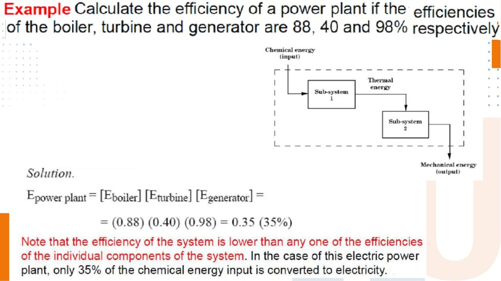
Read it like an engineer
Three devices in a row: boiler 88 %, turbine 40 %, generator 98 %. Missing: the plant's overall efficiency.
Strategy
Series devices: each hands a fraction to the next, so the fractions multiply. Predict first: the answer must land below the worst member, 40 %.
Bottom line
A chain of devices is always worse than its weakest link; fix the weakest first.
Example · Power plant overall efficiency (AU slide 16)
Step 1 Efficiencies of devices in series multiply
Each sub-system hands its output to the next, so the fractions stack.
35 % is below the weakest link (40 %): a chain of devices is always worse than its worst member. Two thirds of the fuel's energy never becomes electricity, most of it lost in the turbine's heat rejection.
\[\eta_{\rm overall}<\min(\eta_i)\]
Where to read: Çengel 9e §2-7, in the style of Ex. 2-16 [10e §2-7]
How I teach it: Have three students be boiler, turbine, generator and pass a '100 kJ' ball, each keeping their share.
Test me
Multiply 0.88 × 0.40 × 0.98 to two digits in your head.
≈ 0.35, i.e. 35 %.
Only 35 % of the fuel becomes electricity: where is the rest?
Heat: mostly the turbine's rejected heat, plus boiler and generator losses.
Boiler 88→93 % or turbine 40→45 %: which upgrade wins?
A pure substance has a fixed chemical composition throughout. Water, nitrogen, helium, CO₂.
It does not have to be a single element or compound: a homogeneous mixture such as air counts, as long as it stays one phase.
A mixture of two or more phases of a pure substance is still pure if every phase has the same composition: ice + liquid water is pure.
Not pure: oil + water (two chemically different regions). Also not pure: liquid air + gaseous air, because the components condense at different temperatures.
Why we care
For a pure substance the state is fixed by two independent properties, so one table with two entries describes it. That is the whole of Chapter 3.
Where to read: Çengel 9e §3-1 [10e §3-1]
How I teach it: Quick-fire: shout substances, class answers pure or not.
Test me
Is air a pure substance? Is an oil-water mix?
Air yes (uniform composition); oil-water no (composition differs by location).
Is ice plus liquid water pure?
Yes: two phases, one chemical composition, H₂O.
Why do we care whether a substance is pure?
Only pure substances have the simple two-property state rule and one set of tables.
18
Three phases: how tightly the molecules hold
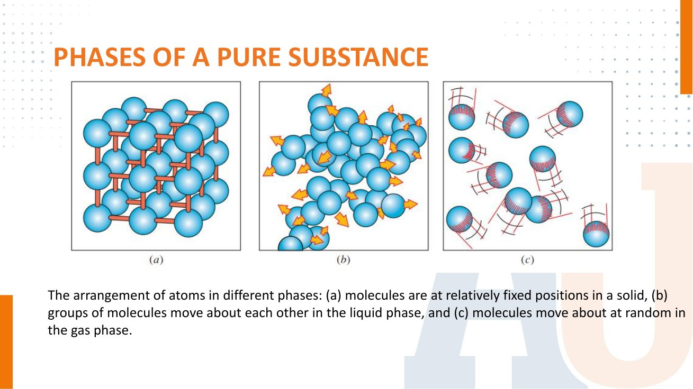
What a phase is (Çengel §3-2)
A phase has a distinct molecular arrangement, homogeneous throughout, separated from other phases by identifiable boundary surfaces.
Three principal phases: solid, liquid, gas. (A substance can have several phases inside one principal phase: carbon as graphite or diamond; ice has seven phases at high pressure.)
The pictures
(a) Solid: molecules in a 3-D lattice, held by large spring-like forces; they only oscillate about fixed positions. Melting begins when groups of molecules break away.
(b) Liquid: spacing similar to the solid, but molecules rotate and translate past each other.
(c) Gas: molecules far apart, random motion, weak forces, much higher energy level. A gas must release a large amount of energy before it can condense or freeze.
Intermolecular bonds: strongest in solids, weakest in gases.
Where to read: Çengel 9e §3-2 [10e §3-2]
How I teach it: Three students: statue (solid), crowd shuffling (liquid), sprinters (gas).
Test me
What holds a solid together that a liquid lacks?
Molecules locked in a lattice; liquids keep distance but lose the fixed positions.
Which phase has molecules that barely interact?
Gas: far apart, high speed, collisions only.
Why does phase matter for energy?
Each phase stores different amounts; changing phase costs or releases large energy.
19
States 1 and 2: compressed liquid, saturated liquid
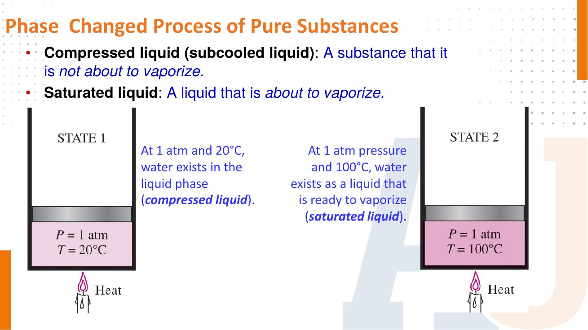
The set-up (Çengel §3-3, Fig. 3-5 to 3-6)
Water in a piston-cylinder. The weight on the piston keeps the pressure at 1 atm for the whole experiment. We add heat and watch T and v.
State 1, 20 °C
All liquid and not about to vaporize: a compressed liquid (also called subcooled liquid). Heating it to 40 °C expands it only slightly; the pressure stays constant.
State 2, 100 °C
Still all liquid, but one more joule and vapour appears: a liquid that is about to vaporize is a saturated liquid.
Start the T-v sketch on the board now
Axes: T up, v across, label the line P = 1 atm. Plot 1 at (small v, 20 °C) and 2 at (slightly larger v, 100 °C). Between them T rises and v grows only a little (liquids barely expand).
Ask
Why does the piston hardly move between state 1 and state 2? liquid water expands very little with temperature
Where to read: Çengel 9e §3-3, Fig. 3-6 to 3-8 [10e §3-3]
How I teach it: Heat an imaginary pot on the board, marking states 1 and 2 as the temperature climbs.
Test me
At 1 atm and 20 °C, which state is water in?
Compressed (subcooled) liquid: far from boiling.
What makes a liquid 'saturated'?
It sits exactly at the boiling point for its pressure: any heat added starts making vapour.
During boiling at fixed pressure, what does T do?
Stays constant until the last drop vaporizes.
20
States 3, 4, 5: mixture, sat. vapour, superheated
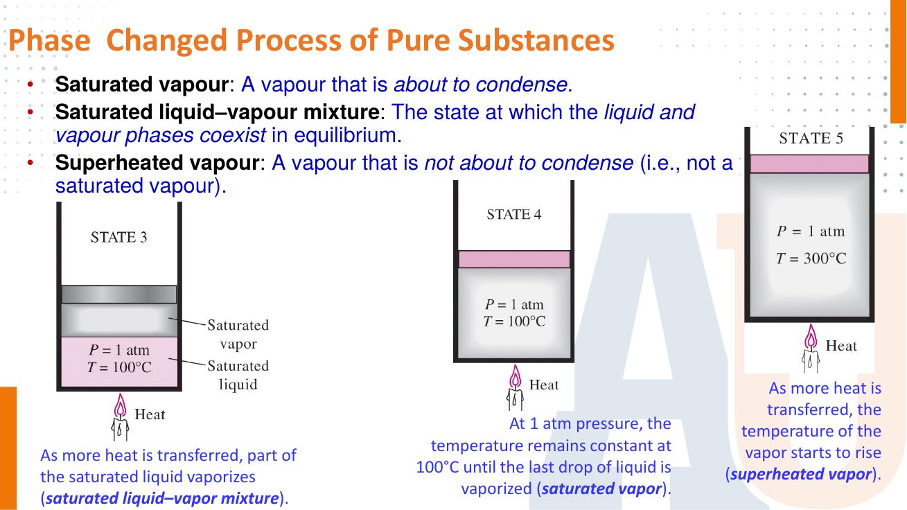
Keep heating from state 2 (Çengel §3-3, Fig. 3-7 to 3-9)
The temperature stays at 100 °C until the last drop of liquid is gone. The energy goes into breaking molecular bonds, not into raising T.
State 3: part liquid, part vapour at 100 °C: a saturated liquid-vapour mixture. Mid-way, equal amounts of each.
State 4: all vapour, still 100 °C, about to condense: a saturated vapour.
State 5: more heat ⇒ T rises again, 300 °C: a vapour not about to condense is a superheated vapour.
What the piston does
Between 2 and 4 the volume grows enormously (about 1600 times for water at 1 atm); the piston shoots up while T is constant.
Continue the T-v sketch: long horizontal line 2 → 4 at 100 °C, point 3 in the middle, rising curve to 5 at 300 °C. Label the three regions along the path: compressed liquid | saturated mixture | superheated vapour.
Ask
A pot boils vigorously on a high flame: which state is the water in, and what is its temperature? state 3, a mixture, 100 °C no matter how high the flame
Where to read: Çengel 9e §3-3, Fig. 3-9 to 3-11 [10e §3-3]
How I teach it: Continue the pot story to state 5; ask the class to name each stop.
Test me
What is a saturated mixture?
Liquid and vapour together at the boiling state: states 2 to 4 of the heating story.
When does water become superheated?
After the last drop vaporizes, any further heat raises T above T_sat.
In which of states 1-5 are T and P independent?
1 (compressed liquid) and 5 (superheated): off the boiling line.
21
The T-v diagram at 1 atm: the picture you just drew
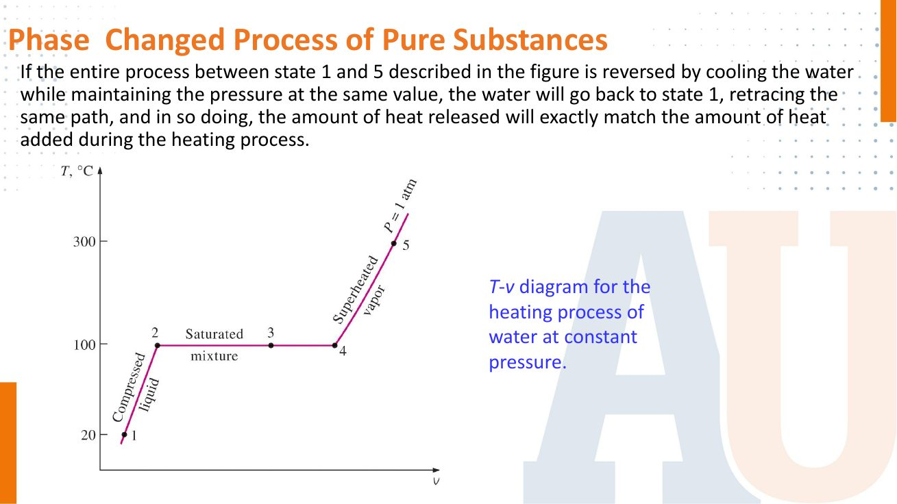
Reading the official figure (Çengel Fig. 3-10)
The flat segment 2 → 4 is the phase change; its length on the v axis is the volume jump, and the heat it costs is the latent heat (slide 23).
Cooling retraces the path 5 → 1 and releases exactly the heat that was added. The diagram is a road, not a one-way street.
The axes use v (per kg), not V: the diagram belongs to the substance, not to the amount of it.
In thermodynamics 'water' and 'steam' both mean H₂O; the word says which phase.
Ask
Repeat the experiment at 2 atm: is the flat line higher or lower? higher: water boils above 100 °C at higher pressure (that is slide 22)
Where to read: Çengel 9e §3-3, Fig. 3-12 [10e §3-3]
How I teach it: Draw the 1 atm heating line live as the class dictates what happens at each stage.
Test me
Why is the boiling segment horizontal on a T-v diagram?
At fixed P, boiling happens at one temperature while v grows: T flat, v stretching.
What does the steep left branch say about liquids?
Huge T change, tiny v change: liquids barely expand.
22
T_sat and P_sat are tied together
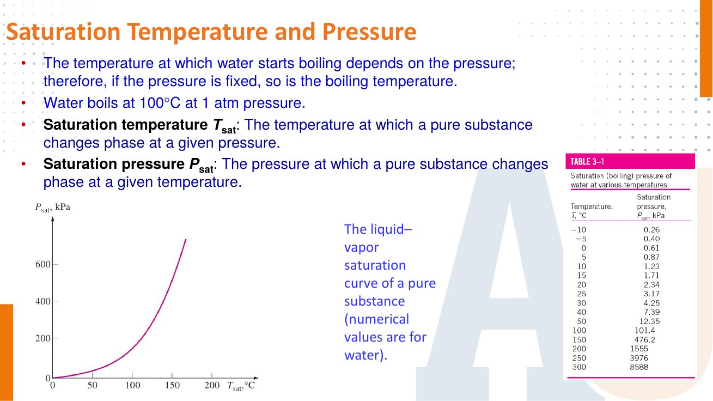
Definitions (Çengel §3-3)
At a given pressure, the temperature at which a pure substance changes phase is the saturation temperature T_sat.
At a given temperature, the pressure at which it changes phase is the saturation pressure P_sat.
'Water boils at 100 °C' is incomplete: it boils at 100 °C at 1 atm. At 500 kPa it boils at 151.8 °C; at 2.34 kPa it boils at 20 °C (Table 3-1).
The curve (liquid-vapour saturation curve, Fig. 3-11)
P_sat = f(T_sat): one curve for each pure substance, rising steeply. T_sat increases with P_sat.
Consequence: during a phase change, P and T are dependent properties. Give me one, I know the other. Outside the dome they are independent.
Everyday proof: a pressure cooker at about 3 atm boils at 134 °C, so food cooks in 20 min instead of 1 to 2 hours.
Ask
You open a can of R-134a at 25 °C. The pressure drops to 1 atm. What happens? it boils and cools to −26 °C, its T_sat at 1 atm
Where to read: Çengel 9e §3-3, Table 3-1 region [10e §3-3]
How I teach it: Ask why astronauts' blood would boil: the P_sat pairing answers it.
Test me
T_sat at 101.325 kPa for water?
99.97 ≈ 100 °C: the definition of normal boiling.
If P_sat(60 °C) ≈ 20 kPa, what happens to 60 °C water in a 15 kPa chamber?
It boils: ambient pressure below its saturation pressure.
State the T_sat-P_sat rule in one line.
Boiling temperature and pressure come in fixed pairs: give one, the other is set.
23
Latent heat, and boiling on a mountain
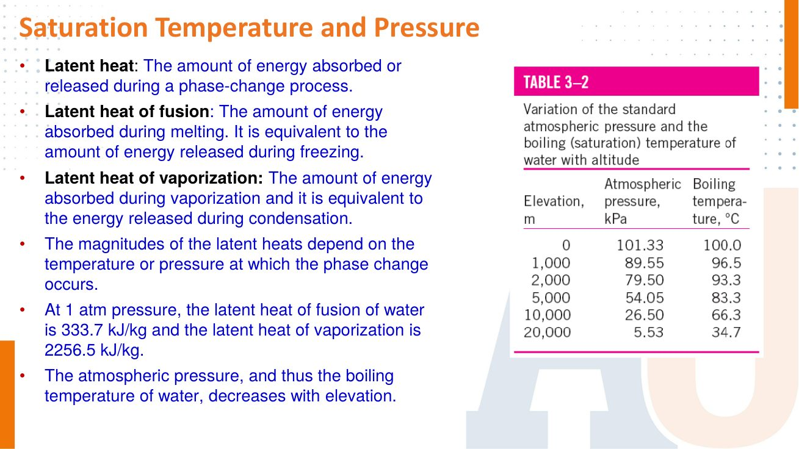
Latent heat (Çengel §3-3)
Latent heat: the energy absorbed or released during a phase change. Latent means hidden: it goes in and the thermometer does not see it.
Latent heat of fusion (melting = freezing): 333.7 kJ/kg for water at 1 atm. Latent heat of vaporization (boiling = condensing): 2256.5 kJ/kg.
Compare: heating liquid water from 0 to 100 °C costs about 420 kJ/kg. Boiling it costs more than five times that. This is why the flat line on the T-v diagram is so long.
The magnitudes depend on the temperature or pressure at which the phase change happens (they shrink toward the critical point).
Altitude (Table 3-2)
Atmospheric pressure falls with elevation, so T_sat falls: about 3 °C per 1000 m. At 2000 m water boils at 93.3 °C; at 5000 m at 83.3 °C; at 20 000 m at 34.7 °C.
Ask
Why does sweating cool you? evaporating water takes its latent heat, about 2400 kJ/kg, from the skin
Where to read: Çengel 9e §3-3 [10e §3-3]
How I teach it: Menti-style vote: boiling on Everest is hotter/cooler/same, then explain.
Test me
What is latent heat of vaporization?
Energy to turn 1 kg of saturated liquid into vapour at constant T and P: h_fg.
Why does food cook slower in the mountains?
Lower pressure, lower T_sat: the water boils cooler, about 90 °C at 2000 m.
What does a pressure cooker change?
Raises P, so T_sat rises to about 120 °C: hotter water, faster cooking.
24
The dome and the critical point
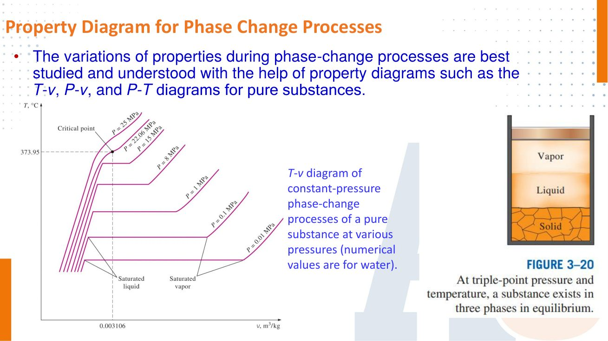
The story
Boil water at 1 atm, then at 1 MPa, then at 10 MPa. Each time it boils at a higher temperature and the flat boiling line gets shorter.
At 22.06 MPa the line shrinks to a single point: the critical point. There, liquid and vapour become the same thing. Water: T_cr = 373.95 °C.
Build the picture
Join all the left ends: the saturated liquid line. Join all the right ends: the saturated vapour line. Together they make the dome.
Right figure: the triple point, the one P and T where ice, water and steam live together (0.01 °C, 0.61 kPa).
Bottom line
The dome is the boiling zone. Above the critical point there is no boiling at all, the liquid just slides into vapour.
Where to read: Çengel 9e §3-4, Fig. 3-15, 3-20 [10e §3-4]
How I teach it: Stack the boiling experiments pressure by pressure on the board, then join the ends into the dome.
Test me
What happens to the flat boiling segment as P rises?
It shortens: v_f and v_g close in on each other.
Define the critical point in one sentence.
The state where saturated liquid and saturated vapour become identical (22.06 MPa, 373.95 °C for water).
Does water boil at 30 MPa?
No distinct boiling above P_cr: the liquid slides smoothly into vapour.
25
The map: T-v and P-v
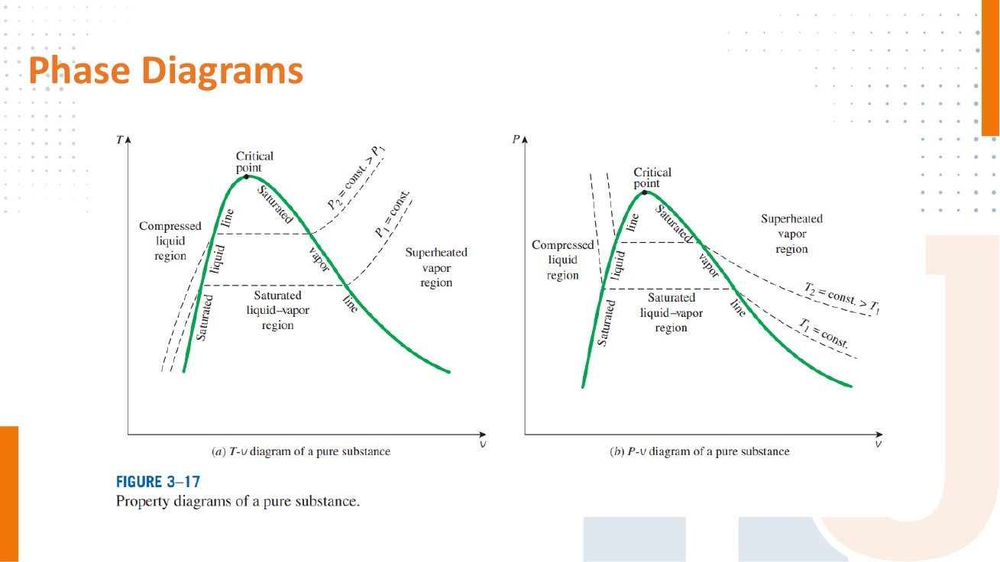
The story
This is the map we will use for the rest of the course. Three regions, two lines, one point.
Left of the dome: compressed liquid. Inside: saturated mixture (wet steam). Right: superheated vapour.
Reading the two maps
T-v map: the dashed lines are constant pressure. P-v map: the dashed lines are constant temperature.
Fig. 3-18: take weights off the piston slowly at 150 °C. The water boils the moment P drops to P_sat = 476 kPa.
Bottom line
Before any table or equation, ask one question: where on the map am I?
Where to read: Çengel 9e §3-4, Fig. 3-17, 3-18 [10e §3-4]
How I teach it: This is the slide to tattoo: cover the regions and have the class name them blind.
Inside the dome, how many independent properties fix the state?
One of T or P plus the quality x: T and P are tied.
Above the critical pressure, what do we call the substance?
Superheated vapour above T_cr, compressed liquid below: no boiling between them.
28
Tables, and a new friend: enthalpy
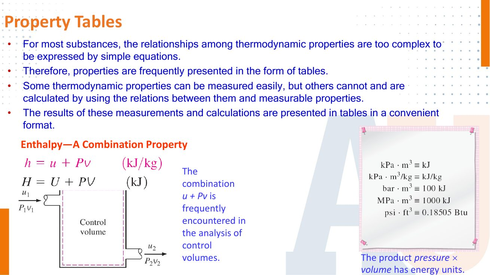
The story
Real substances are too complicated for one neat formula, so engineers measured everything and wrote it in tables. Your job is to read them well.
Enthalpy
h = u + P v (kJ/kg)
Why invent it? Flowing fluid always carries u plus the push work Pv (slide 5). Adding them once saves writing them twice, so the tables list h directly.
Units check: kPa × m³/kg = kJ/kg. Pressure times volume is energy.
Bottom line
When fluid flows, use h. When it sits in a tank, use u.
Where to read: Çengel 9e §3-5, Eq. 3-1, 3-2 [10e §3-5]
How I teach it: Show u + Pv appearing twice in the slide-5 balance, then name it once: h.
Test me
Why tables instead of one formula?
Property relations for real substances are too complex; measurements are tabulated instead.
Define enthalpy and say why it exists.
h = u + Pv: flowing fluid always carries u plus flow work Pv, so the sum gets its own column.
Units check: kPa times m³ gives what?
kJ: pressure × volume is energy.
29
Tables A-4 and A-5: f, g, fg
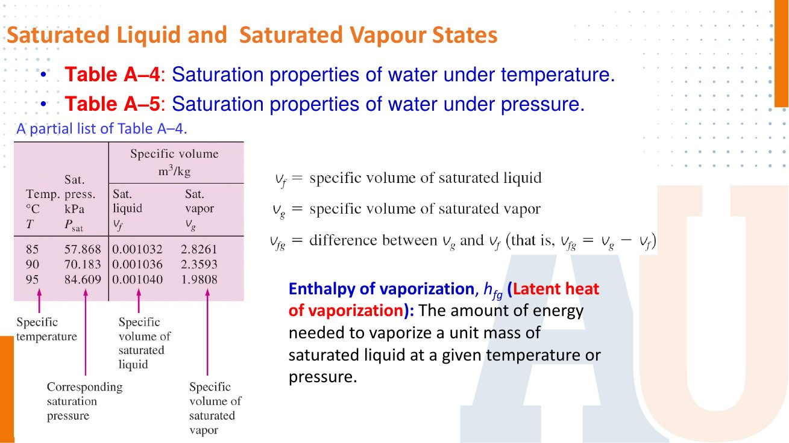
The story
Same data, two doorways. A-4 is sorted by temperature, A-5 by pressure. Enter through whichever you were given.
Three subscripts
f = saturated liquid (the left edge), g = saturated vapour (the right edge), fg = the jump between them.
At 90 °C: v_f = 0.001036, v_g = 2.3593 m³/kg. Steam takes about 2300 times the room of the water it came from.
h_fg is the latent heat from slide 23: the energy to boil 1 kg. It shrinks as P rises and reaches zero at the critical point.
Bottom line
f is liquid, g is gas, fg is the difference: v_fg = v_g − v_f.
Where to read: Çengel 9e §3-5, Tables A-4, A-5 [10e §3-5]
How I teach it: Project the 90 °C row and have students read each column aloud.
Test me
A-4 vs A-5: what is the difference?
Same saturation data; A-4 is sorted by temperature, A-5 by pressure.
Decode v_f, v_g, v_fg.
Saturated liquid v, saturated vapour v, and their difference v_g − v_f.
What happens to h_fg as P rises to the critical point?
Shrinks to zero: liquid and vapour merge.
30
Saturated states live on the edges
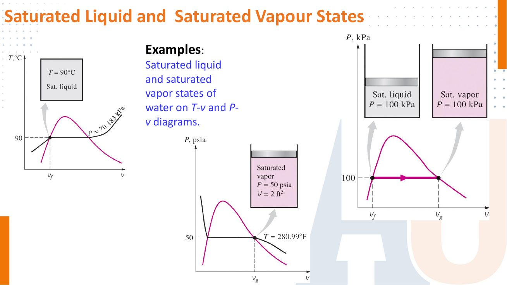
The story
A saturated state is never inside the dome, it sits on an edge. Left edge: read the f column. Right edge: read the g column.
Left picture: saturated liquid at 90 °C. Its pressure is not a free choice, it must be P_sat = 70.18 kPa.
Right picture: at 100 kPa the whole boiling line sits at T_sat = 99.6 °C, from v_f to v_g.
Bottom line
'Saturated' means one number is enough: give me P or T and the table gives me everything else.
Where to read: Çengel 9e §3-5, Fig. 3-28 to 3-30 [10e §3-5]
How I teach it: Point at each sketch and ask: which edge, which column?
Test me
'Saturated liquid at 90 °C': how many more numbers fix the state?
None: one number plus the word saturated pins it; the table gives the rest.
Where do saturated states live on the diagram?
On the dome's edges: left edge f, right edge g.
Saturated vapour at 100 kPa: its temperature?
T_sat at 100 kPa = 99.6 °C; no choice in the matter.
31
Quality x: how much is steam
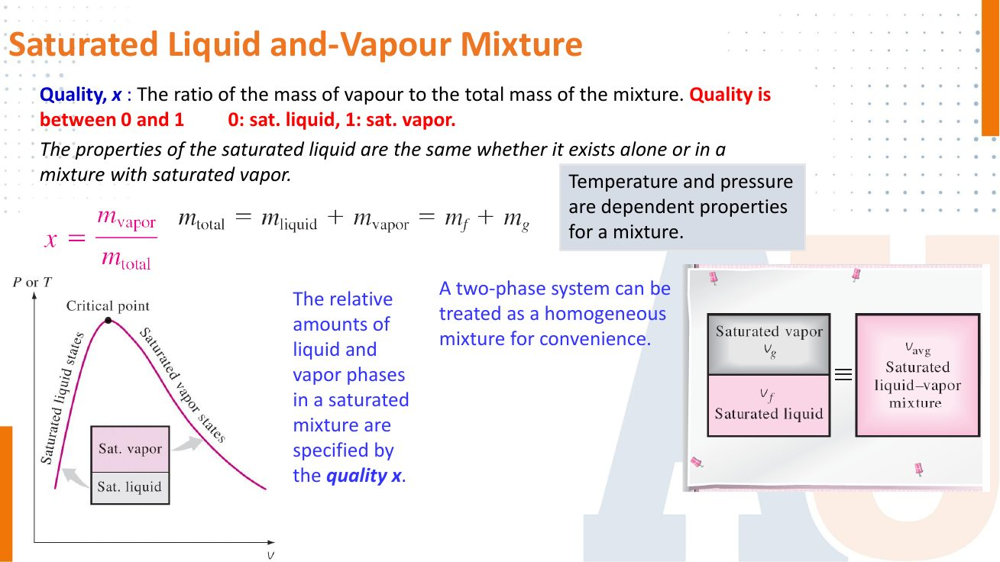
The story
Inside the dome we have a mixture of liquid and vapour. Quality tells us how much of the mass is vapour.
x = m_vapour ÷ m_total
x = 0 means all liquid, x = 1 means all vapour, 0.3 means 30 % of the kilograms are steam.
Quality only exists inside the dome. For compressed liquid or superheated vapour, x has no meaning.
Bottom line
Inside the dome the state is fixed by T (or P) plus x. Quick check: 10 kg, 8 kg liquid, x = 0.2.
Where to read: Çengel 9e §3-5, Eq. 3-3 [10e §3-5]
How I teach it: Three quick oral x calculations before the formula goes on the board.
Test me
Quality x in one line?
Mass of vapour over total mass, 0 to 1, defined only inside the dome.
10 kg of mixture, 8 kg liquid: x?
x = 2/10 = 0.2.
Why is x meaningless for superheated steam?
No liquid present: there is no mixture to describe.
32
The lever rule: y = y_f + x y_fg
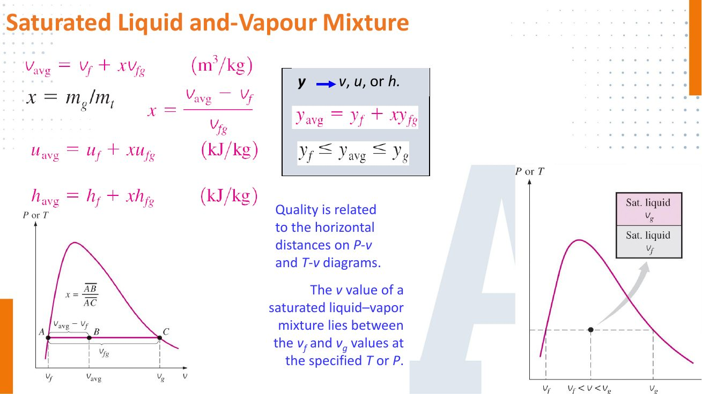
The story
A mixture's property is just a weighted average of liquid and vapour, weighted by quality.
v = v_f + x v_fg u = u_f + x u_fg h = h_f + x h_fg
Turn it around to find quality from a measured property: x = (v − v_f) ÷ v_fg.
Picture
On the diagram x is the fraction of the way across the dome: halfway means x = 0.5.
Bottom line
Any mixture value must sit between f and g. If your v is bigger than v_g, you are not in the dome.
Where to read: Çengel 9e §3-5, Eq. 3-4 to 3-7, Fig. 3-33 [10e §3-5]
How I teach it: Draw the dome's width as a metre stick: x is just how far across you stand.
Test me
Write the lever rule for v.
v = v_f + x·v_fg.
Measured v = 1.0 m³/kg at 100 °C (v_f ≈ 0.001, v_g = 1.672): x?
x = (1.0 − 0.001)/1.671 ≈ 0.60.
Your computed v beats v_g: meaning?
You are outside the dome: superheated, x undefined.
33
Superheated vapour: Table A-6
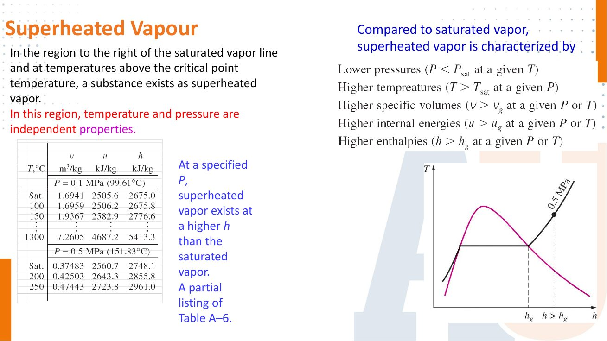
The story
Right of the dome the steam is dry and hot. T and P are now independent, so the table needs both: pick the pressure block, then the temperature row.
First row of each block is 'Sat.', the g values. Between rows, use linear interpolation.
How to recognise it
T > T_sat at the given P, or v > v_g, or h > h_g. Any one of these is enough.
Bottom line
Hotter than boiling at that pressure means superheated: open A-6.
Where to read: Çengel 9e §3-5, Table A-6 [10e §3-5]
How I teach it: Open A-6 live: find the pressure block, then the temperature row, read h.
Test me
Three ways to recognise superheated vapour?
T > T_sat at P; v > v_g; h > h_g (any one suffices).
Why does A-6 need two inputs?
Off the dome, T and P are independent: both are needed.
Steam at 0.5 MPa, 100 °C: superheated?
No: 100 < T_sat = 151.83 °C, it is compressed liquid.
34
Compressed liquid: the shortcut
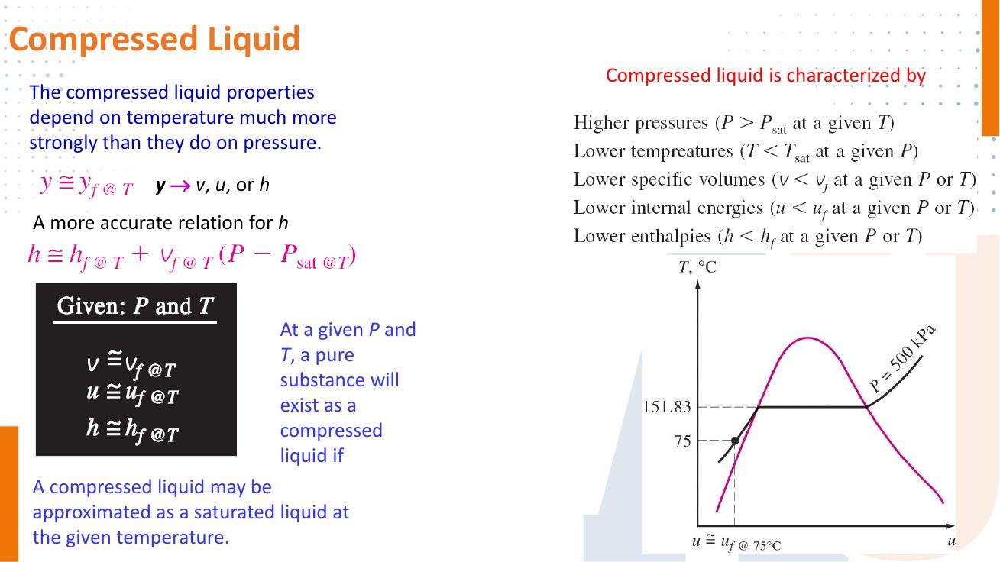
The story
Liquids barely care about pressure. Squeeze water 100 times harder and its properties move by less than 1 %.
y ≈ y_f @ T (v, u or h: take the f value at the given temperature)
Table A-7 exists but starts at 5 MPa. Below that the shortcut is all we have.
How to recognise it
T < T_sat at the given P, or v < v_f. The figure: 75 °C at 500 kPa, T_sat is 151.8 °C, so it is compressed liquid, u ≈ u_f at 75 °C.
Bottom line (the decision tree)
Given T and P: compare T with T_sat@P. Below ⇒ liquid, A-4 at T. Equal ⇒ mixture, need x. Above ⇒ superheated, A-6.
Where to read: Çengel 9e §3-5, Eq. 3-8, Table A-7 [10e §3-5]
How I teach it: Finish by drawing the decision tree next to the dome and having the class recite it twice.
Test me
The compressed-liquid shortcut?
y ≈ y_f at the given temperature (not pressure), for v, u, h.
Why temperature and not pressure?
Liquid properties barely feel pressure; they follow T.
Recite the T vs T_sat decision tree.
T < T_sat: compressed liquid; T = T_sat: saturated; T > T_sat: superheated.
35
Problem 1: saturated liquid in a rigid tank
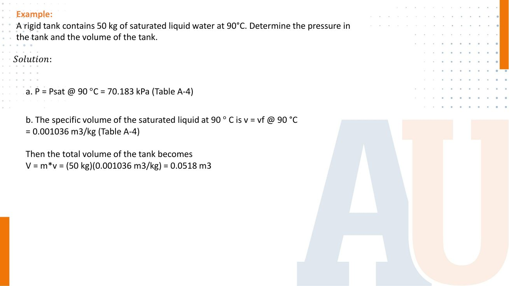
Read it like an engineer
A rigid tank holds 50 kg of saturated liquid water at 90 °C. Find the pressure and the volume.
Strategy
'Saturated liquid' pins the state to the left edge of the dome: one number (T) fixes everything, so Table A-4 at the 90 °C row answers both questions. Sanity check: 50 kg of liquid water is about 50 L, a big bucket, so V should land near 0.05 m³.
Bottom line
On the saturation line the pressure is not a choice: T picks P, and the f columns do the rest.
Problem 1 · Saturated liquid in a rigid tank (Ex 3-1)
Step 1 Where am I on the map?
'Saturated liquid' = left edge of the dome. One number (T) fixes everything: open the temperature table.
\[\text{state} = \text{saturated liquid at } T=90\,^{\circ}\text{C}\]
Table A-4, row 90 °C, f columns
Step 2 Pressure comes from the table, not from a choice
\[P=P_{\rm sat@90\,^{\circ}C}\]
\[P=70.183\ \text{kPa}\]
\[P=70.183\ \text{kPa}\]
Step 3 Volume = mass × specific volume of the liquid
\[V=m\,v_{f@90\,^{\circ}C}\]
Table A-4, 90 °C: v_f = 0.001036 m³/kg (v_g = 2.3593 would give 118 m³, a room of steam: wrong column!)
\[V=(50)(0.001036)\]
\[V=0.0518\ \text{m}^3\approx52\ \text{L}\]
Where to read: Çengel 9e §3-5, Ex. 3-1 [10e Ex. 3-1]
How I teach it: Before solving, ask the class which table and which row; only then compute.
Test me
Why is P not free to choose here?
On the saturation line T and P are paired: 90 °C water boils only at 70.183 kPa.
What volume would the v_g column have given, and why is it absurd?
50 × 2.3593 = 118 m³: a room full of steam, not 50 kg of liquid.
Same tank but saturated vapour at 90 °C: new V?
V = 50 × 2.3593 = 118 m³; same T, other edge of the dome.
36
Table A-4, the row we just used
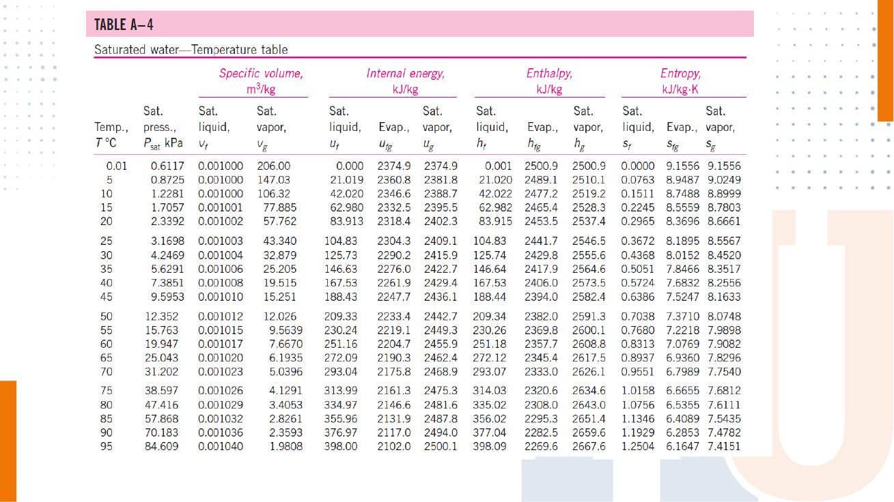
This is the A-4 extract: temperature rows, f and g columns. We read the 90 °C row on the last slide. Press Next.
Where to read: Çengel 9e Table A-4
How I teach it: One line and move on.
Test me
Which column gives the volume of boiling liquid water?
v_f: saturated liquid specific volume.
37
Problem 2: saturated mixture, P and V
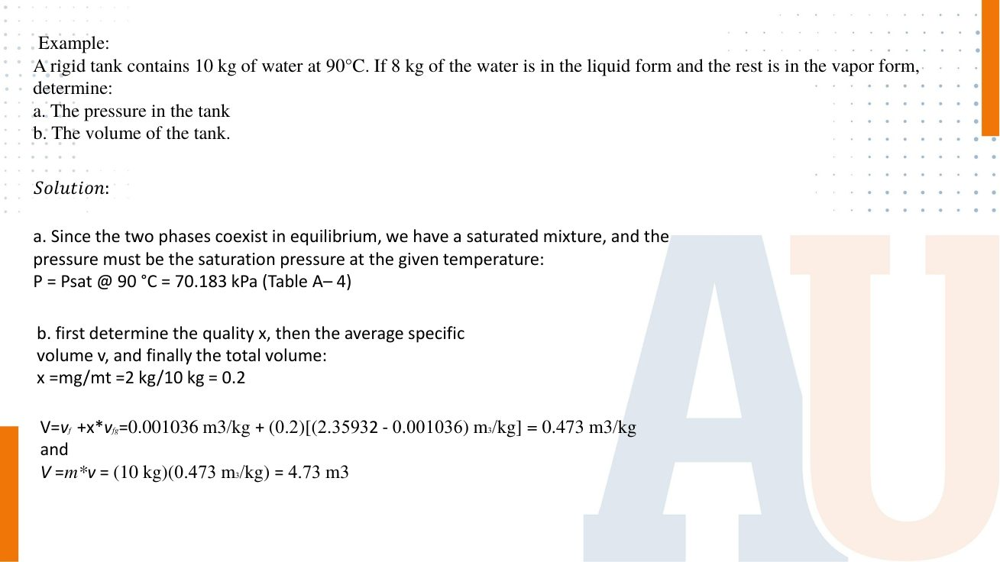
Read it like an engineer
The same 90 °C tank, but now 10 kg of water of which 8 kg is liquid and 2 kg vapour. Find P and V.
Strategy
Liquid and vapour together: inside the dome. The pressure question is unchanged (T fixes it); the volume needs the mix. Two routes: quality + lever rule, or add the two phase volumes; we do both as a built-in check.
Bottom line
Two kg of vapour fill 99.8 % of the tank: quality is a mass fraction, never a volume fraction.
Problem 2 · Saturated mixture: P and V (Ex 3-4)
Step 1 Inside the dome: temperature alone fixes the pressure
Two kg of vapour fill 99.8 % of the tank. That is why x is a mass fraction, never a volume fraction.
\[V=m_f v_f+m_g v_g=(8)(0.001036)+(2)(2.3593)\]
\[V=0.008+4.72=4.73\ \text{m}^3\;\checkmark\]
Where to read: Çengel 9e §3-5, Ex. 3-4 [10e Ex. 3-4]
How I teach it: Trap first: ask for x and let someone say 0.8; correct it publicly and kindly.
Test me
x = 8/10 = 0.8: what went wrong?
Quality is the vapour fraction: x = m_g/m_t = 2/10 = 0.2.
Why is P the same as in Problem 1?
Still saturated at 90 °C: the mixture does not change the T-P pairing.
Without the lever rule, how else do you get V?
V = m_f·v_f + m_g·v_g: add the two phase volumes.
38
Problem 3: R-134a, 80 litres, 4 kg
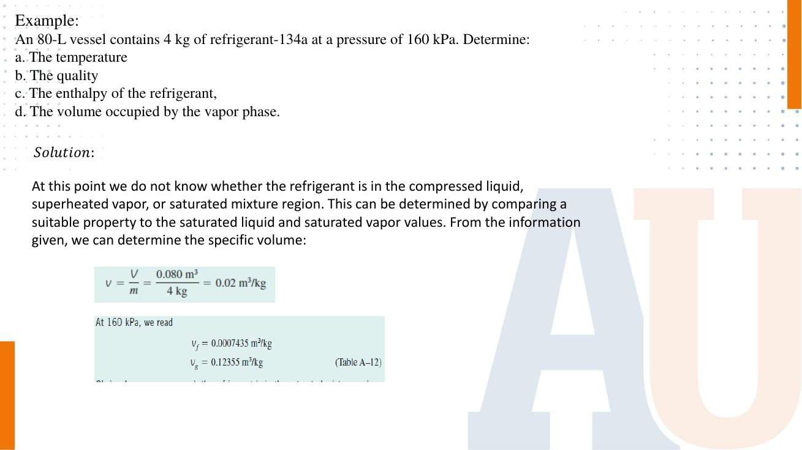
Read it like an engineer
A vessel of 80 L holds 4 kg of refrigerant-134a at 160 kPa. Find T, x, h, and the volume taken by the vapour.
Strategy
Nobody says the region this time: that is the lesson. Compute v = V/m, then run the region test against v_f and v_g from Table A-12. Only after the test may we say T = T_sat and use the lever rule. Order: v, region, T, x, h, V_g.
Bottom line
When the region is not announced, the region test is step one, always.
Problem 3 · R-134a: 80 L, 4 kg at 160 kPa (Ex 3-5)
Step 1 Specific volume from what is given
\[v=\frac{V}{m}=\frac{0.080}{4}\]
\[v=0.02\ \text{m}^3/\text{kg}\]
Step 2 Region test: compare v with v_f and v_g
This is the step students skip. Never open a table before you know the region.
Where to read: Çengel 9e §3-5, Ex. 3-5 [10e Ex. 3-5]
How I teach it: Hide the word 'mixture' and ask the class what region we are in; make them prove it.
Test me
Why can't we look up T directly from 160 kPa?
Only if saturated; the region test must confirm v_f < v < v_g first.
15.7 % of the mass fills 97 % of the volume: why?
Vapour is light but bulky: v_g is 166 times v_f here.
Which table serves R-134a by pressure?
A-12 (A-11 is by temperature).
39
The official solution
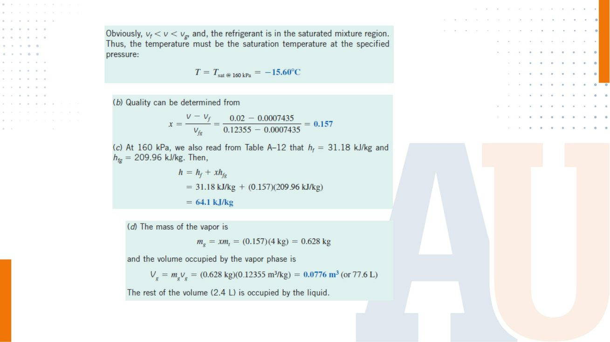
This is the AU solution of the R-134a problem from slide 38; same numbers: −15.6 °C, x = 0.157, h = 64.1 kJ/kg, V_g = 77.6 L. Press Next.
Where to read: Çengel 9e Ex. 3-5
How I teach it: One line and move on.
Test me
Which number proves we were inside the dome?
v = 0.02 sits between v_f = 0.0007 and v_g = 0.1236 m³/kg.
40
Table A-12, the row we just used
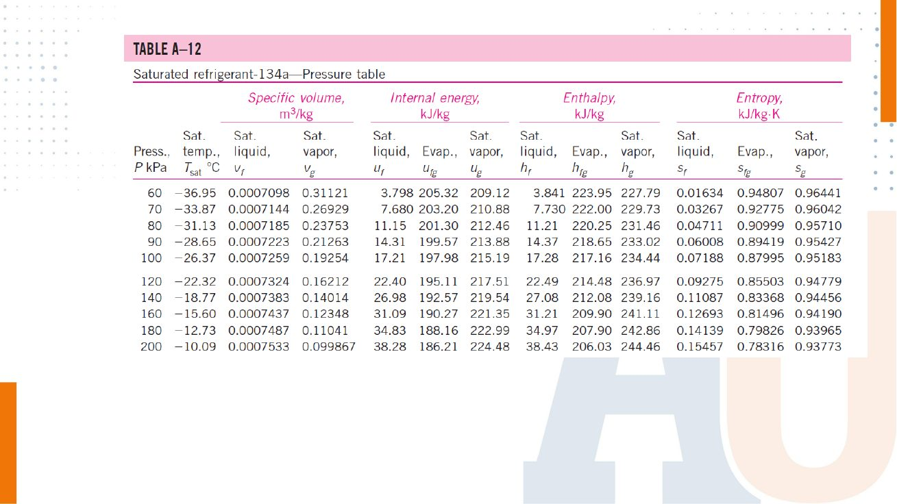
The A-12 extract: 160 kPa row, f and g columns for R-134a. Press Next.
Where to read: Çengel 9e Table A-12
How I teach it: One line and move on.
Test me
T_sat of R-134a at 160 kPa?
−15.6 °C: refrigerants boil cold at low pressure; that is their job.
41
Problem 4: compressed liquid, exact vs shortcut
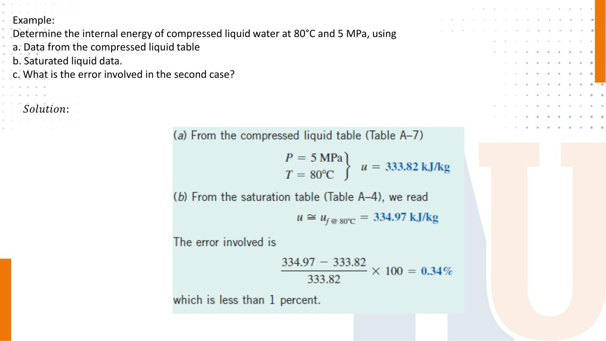
Read it like an engineer
Water at 80 °C under 5 MPa. Find u from the compressed-liquid table, then from the shortcut, then the error between them.
Strategy
First the region test: 5 MPa against P_sat(80 °C) = 47.4 kPa; far above, so compressed liquid. Route 1: Table A-7 directly. Route 2: u ≈ u_f at the same temperature. Then compare.
Bottom line
Squeezing water 100 times harder moved u by 0.34 %: liquids follow temperature, not pressure.
Problem 4 · Compressed liquid: exact vs shortcut (Ex 3-8)
Where to read: Çengel 9e §3-5, Ex. 3-7 [10e Ex. 3-7]
How I teach it: Do the interpolation on the board slowly once; it returns in every exam.
Test me
Why A-6 and not A-4 or A-5?
h > h_g says superheated; the saturation tables stop at the dome's edge.
The sanity check on the answer?
T must beat T_sat(0.5 MPa) = 151.83 °C; 216.3 does.
h = 2748.1 exactly: what state?
Saturated vapour, x = 1, T = 151.83 °C: the right edge itself.
43
Problem 6: fill the table (a) to (e)
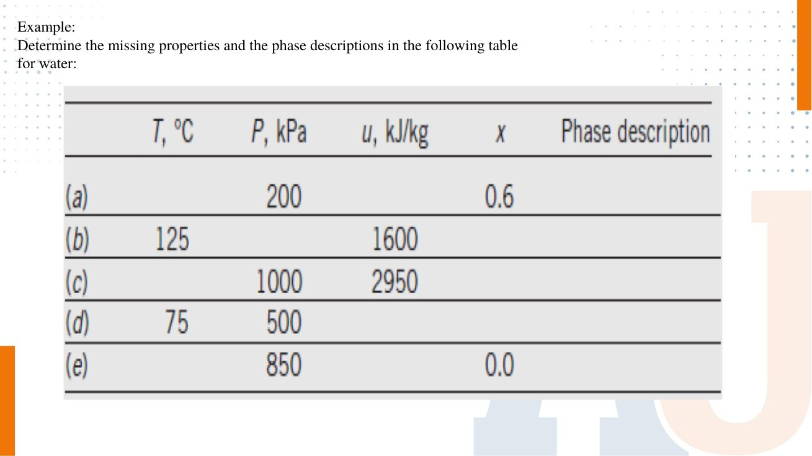
Read it like an engineer
Five rows of water, each missing pieces: (a) P = 200 kPa, x = 0.6. (b) T = 125 °C, u = 1600. (c) P = 1 MPa, u = 2950. (d) T = 75 °C, P = 500 kPa. (e) P = 850 kPa, x = 0. Fill T, P, u, x and the phase of each.
Strategy
One question for every row: where on the map am I? If x is given, the region is announced. If not, compare the given u (or T) against the f and g values at the given T (or P): below f is liquid, between is mixture, above g is superheated. Then the right table answers in one line.
Bottom line
Five rows, one rule: region first, table second.
Problem 6 · Fill the table (a) to (e) (Ex 3-9)
Step 1 Row (a): P = 200 kPa, x = 0.6
A quality exists, so it is a mixture; P alone fixes T.
Two properties are given, T and P, so run the region test before touching any u column: open A-5 at P = 500 kPa and read T_sat = 151.83 °C. Our water is at 75 °C, far below the boiling temperature at this pressure, so it cannot be boiling: compressed liquid. (A-4 gives the same verdict the other way: P_sat at 75 °C is 38.60 kPa, and our 500 kPa is far above it.) The 500 kPa then barely matters: u follows the temperature.
Where to read: Çengel 9e §3-5, Ex. 3-9 [10e Ex. 3-9]
How I teach it: Run it as a game: one row per pair of students, five minutes, then compare with the solve.
Test me
Row (d) hands you P = 500 kPa. What do you do with it?
Use it only for T_sat in the region test; the u value then follows the temperature: u ≈ u_f(75 °C).
In row (c), why is x blank in the answer?
Superheated: no liquid, no quality.
Which rows needed no region test at all?
(a) and (e): a given x announces the region.
44
Official solution, rows (a) and (b)
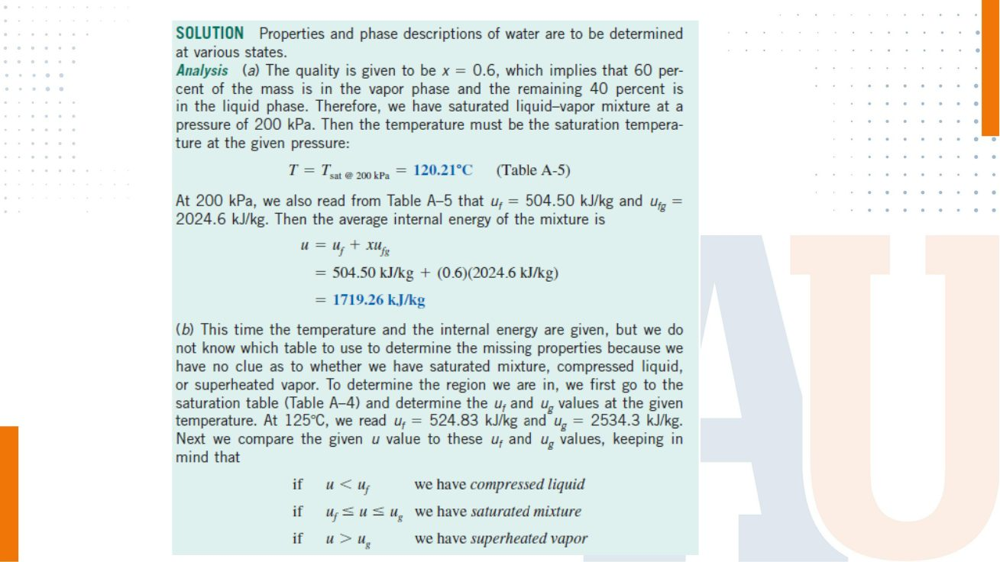
AU's worked rows (a) and (b): same 120.21 °C, 1719.3 kJ/kg; 232.23 kPa, x = 0.535. We built them on slide 43. Press Next.
Where to read: Çengel 9e Ex. 3-9
How I teach it: One line and move on.
Test me
Row (b): why did we compare u with u_f and u_g?
No x given: the comparison is the region test that picks the table.
45
Official solution, rows (c) and (d)
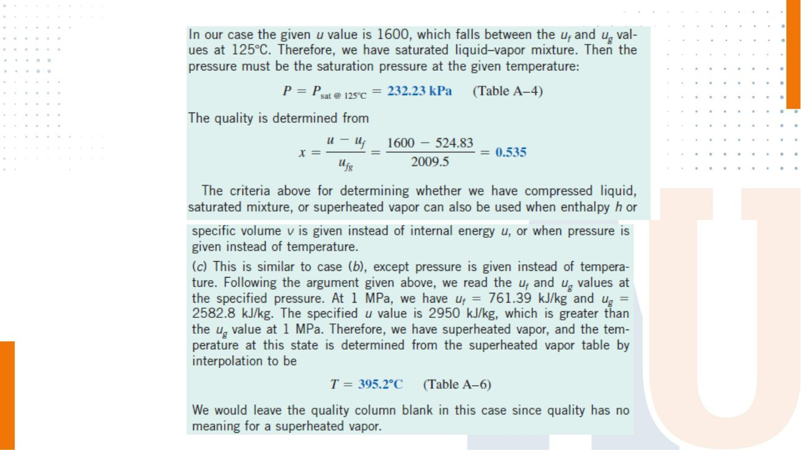
AU's rows (c) and (d): superheated 395.2 °C by interpolation; compressed liquid u ≈ 313.99 kJ/kg at 75 °C. Press Next.
Where to read: Çengel 9e Ex. 3-9
How I teach it: One line and move on.
Test me
Row (d) in one sentence?
75 °C is far below T_sat(500 kPa) = 151.8 °C: compressed liquid, read u_f at 75 °C.
46
Official solution, row (e)
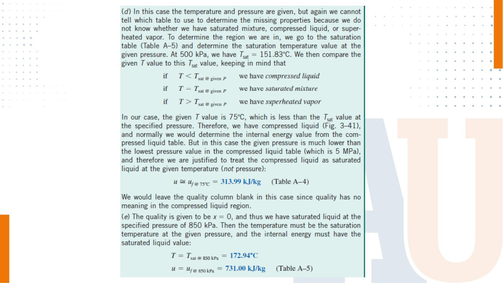
AU's row (e): x = 0 means saturated liquid: 172.94 °C, u = 731.00 kJ/kg from the f columns at 850 kPa. Press Next.
Where to read: Çengel 9e Ex. 3-9
How I teach it: One line and move on.
Test me
What did x = 0 buy us?
The region for free: left edge of the dome, f columns, no test needed.
47
Problem 7: the adiabatic steam turbine
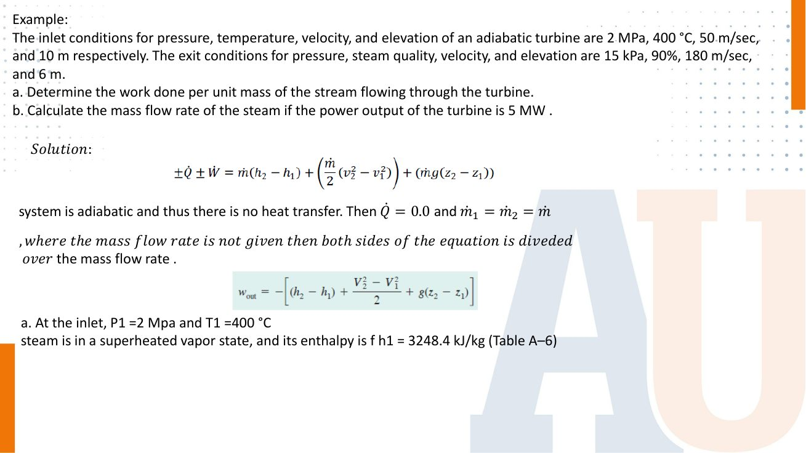
Read it like an engineer
Tables meet the first law. Steam enters a turbine at 2 MPa and 400 °C at 50 m/s, 10 m up; it leaves at 15 kPa with quality 0.9, at 180 m/s, 6 m up. The turbine is adiabatic and delivers 5 MW. Find the work per kg and the mass flow.
Strategy
Two states to pin, then one balance. State 1: region test (400 °C vs T_sat at 2 MPa), then A-6. State 2: quality given, so the lever rule at 15 kPa. Keep all three fluid terms once more, to see their sizes. Sanity: w should land near the enthalpy drop, around 900 kJ/kg.
Bottom line
In a turbine the enthalpy drop is the whole story: KE cost us 15 kJ/kg, elevation 0.04.
Problem 7 · Adiabatic steam turbine (slides 47-48)
Step 1 Draw the system: insulated turbine, one inlet, one exit
System: OPEN system (control volume): mass crosses the boundary. Open system (control volume), steady flow; insulated casing, so no Q̇ arrow at all
Steam crosses the dashed boundary: OPEN system (control volume), steady. The casing is insulated, so no heat arrow crosses the line anywhere.
Step 2 Assumptions, then the full balance shrinks
Assumptions: 1) steady flow; 2) adiabatic, q = 0 (insulated); 3) only shaft work. We deliberately KEEP the kinetic and potential terms this once, to see their real size.
Watch the units. h from the tables is already kJ/kg, but V²/2 comes out in m²/s², and one m²/s² is exactly one J/kg: joules, not kilojoules. Since 1 kJ = 1000 J, divide by 1000 to turn J/kg into kJ/kg before adding it to h. Same for gz: 9.81 × metres also gives J/kg. h₁, h₂ from Steps 3 and 4.
A capillary tube drops refrigerant from 0.8 MPa, saturated liquid, to 0.12 MPa. Find the exit quality and the temperature drop.
Strategy
The throttle rule does the heavy lifting: h₂ = h₁. Pin state 1 from the f columns, carry h across, region-test it at 0.12 MPa, then the lever rule gives x₂ and T_sat gives T₂. Sanity: throttling a liquid into low pressure must cool it; expect tens of degrees.
Bottom line
No cold source anywhere: flashing liquid into vapour eats its own latent heat, and the stream chills by 54 °C. That is your refrigerator.
Problem 8 · Throttling of R-134a (slide 49)
Step 1 Draw the system: a valve in a pipe
System: OPEN system (control volume): mass crosses the boundary. Open system, steady; the dashed line hugs a tiny valve
Refrigerant flows through: OPEN system, steady. The boundary hugs a tiny valve: no shaft sticks out and there is no surface area to exchange heat.
Step 2 Assumptions kill every term except h
Assumptions: 1) no work, w = 0 (no shaft); 2) adiabatic, q ≈ 0 (tiny device); 3) same pipe size in and out, ΔKE ≈ 0; 4) horizontal, ΔPE = 0.
Where to read: Çengel 9e §5-4, throttling valves [10e §5-4]
How I teach it: Start with the mystery: we cool 54 degrees with no cold source. Who pays?
Test me
Why is h constant across a throttle?
No work, no heat, negligible KE/PE change in a tiny device: the balance leaves h₂ = h₁.
Where did the cooling energy come from?
From the liquid itself: 34 % of it evaporated, absorbing latent heat from the rest.
What does this device do in your kitchen fridge?
It is the capillary tube between condenser and evaporator: makes the cold, low-P mixture.
50
Problem 9: turbine with efficiency
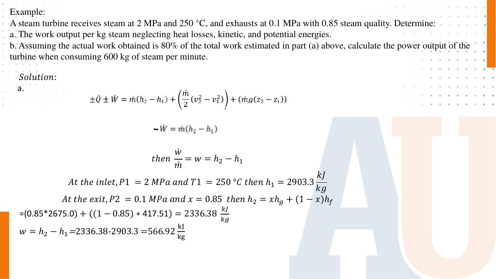
Read it like an engineer
Steam from 2 MPa, 250 °C to 0.1 MPa with x₂ = 0.85; no heat loss, no KE/PE. Find the ideal work per kg; then with efficiency 80 % and flow 600 kg/min, the actual power.
Strategy
The balance collapses to w = h₁ − h₂: all the effort is pinning the two states (A-6 for the superheated inlet, lever rule at 0.1 MPa for the exit). Then two conversions: kg/min to kg/s, and η applied to the power, not to the enthalpies.
Bottom line
Ideal first, reality second: compute the perfect w, then let η shave it.
Problem 9 · Steam turbine: ideal work, actual power (slides 50-51)
Step 1 Draw the system: adiabatic turbine (the ideal one first)
System: OPEN system (control volume): mass crosses the boundary. Open system, steady; inlet and exit speeds and heights not given, so ΔKE, ΔPE dropped
Mass crosses the boundary: OPEN system, steady. No speeds or heights are given, so ΔKE and ΔPE are taken negligible, and the ideal turbine is adiabatic.
Read it right to left. w_out from the last step is the IDEAL work per kg: what a perfect, loss-free turbine harvests between these two states. A real machine wastes part of the drop in friction and turbulence, and η = 0.80 says we only keep 80 %. ṁ converts per-kg to per-second: kg/s × kJ/kg = kJ/s = kW. Flow rate first: 600 kg/min ÷ 60 = 10 kg/s.
Steam at 800 kPa, 400 °C enters a nozzle at 10 m/s through 800 cm²; it leaves at 200 kPa, 300 °C. The nozzle loses 25 kW of heat. Find the exit velocity and exit volume flow.
Strategy
A nozzle makes speed, not work: the balance trades enthalpy for V²/2. Both states are superheated (A-6 twice). ṁ comes from the inlet area: ṁ = A₁V₁/v₁. Watch the two unit moves: cm² to m², and kJ/kg × 1000 to m²/s².
Bottom line
A 196 kJ/kg enthalpy drop became 606 m/s: that is all a nozzle is.
Problem 10 · Steam nozzle with heat loss (slides 52-53)
Step 1 Draw the system: a nozzle that loses heat
System: OPEN system (control volume): mass crosses the boundary. Open system, steady; a nozzle exists to change KE, so KE stays in the balance
Steam flows through: OPEN system, steady. A nozzle has no shaft, so w = 0; it is horizontal, so ΔPE = 0. We must NOT drop ΔKE: changing the speed is the whole point of the device. Heat leaks out, so q_out stays too.
Step 2 Assumptions, then the full balance shrinks
Assumptions: steady; no work (no shaft); ΔPE = 0. Keep h, KE and the heat loss.
Table A-6: 0.8 MPa, 400 °C → h = 3267.7, v = 0.38429. 0.2 MPa, 300 °C → h = 3072.1, v = 1.31623
\[h_1=3267.7,\qquad h_2=3072.1\ \text{kJ/kg}\]
Step 4 Mass flow from the inlet area
A₁V₁ is the VOLUME entering per second: a cylinder of steam with the pipe's area (0.08 m²) sliding in at 10 m/s = 0.8 m³/s. The balance needs kilograms per second, and the table's v₁ = 0.38429 m³/kg is the converter: each kg occupies 0.38429 m³, so kg/s = (m³/s) ÷ (m³/kg). Dividing by v is just multiplying by density (ρ = 1/v); we divide because the tables give v, not ρ.
Same unit bridge, run backwards: the enthalpy terms are in kJ/kg, and we need V₂ in m/s, so multiply by 1000 to go from kJ/kg to J/kg = m²/s² before taking the square root. Inlet KE (50 m²/s² term) is nothing beside 183 600: the enthalpy drop became speed.
Which single number in this solution is the nozzle's purpose?
V₂ = 606 m/s.
54
Problem 11: the mixing chamber
Read it like an engineer
Cold water, 2.5 kg/s at 200 kPa and 20 °C, is heated by mixing with steam at 200 kPa and 150 °C. The chamber loses 1200 kJ/min; the mix leaves at 60 °C. Find the steam flow ṁ₂.
Strategy
Two inlets, one exit: a mass balance and an energy balance, two equations for two unknowns (ṁ₂, ṁ₃). Region-test each stream against T_sat(200 kPa) = 120.2 °C: 20 and 60 °C are compressed liquid (h ≈ h_f at T), 150 °C is superheated (A-6). Then substitute and solve.
Bottom line
Three streams, three regions, one T_sat line to sort them: the region test is a sorting machine.
Problem 11 · Mixing chamber (slides 54-55)
Step 1 Draw the system: two streams in, one out
System: OPEN system (control volume): mass crosses the boundary. Open system, steady, TWO inlets: mass and energy both need balancing
Two streams cross the boundary in, one out: OPEN system, steady. With two inlets, write TWO balances: mass and energy. No shaft, so w = 0; speeds and heights negligible.
Step 2 Two balances for two inlets, one exit
Assumptions: steady; no work; ΔKE ≈ ΔPE ≈ 0. The chamber leaks 1200 kJ/min = 20 kW of heat.
Where to read: Çengel 9e §5-4, mixing chambers [10e §5-4]
How I teach it: Draw the tee, write T_sat = 120.2 °C across it, and let the class sort the three streams.
Test me
Why h_f at 20 °C and not at 200 kPa?
Compressed liquid follows temperature: h ≈ h_f(T), the pressure is nearly irrelevant.
What would ṁ₂ be without the heat loss?
0.166 kg/s, the number printed on the AU slide; with the 20 kW loss, 0.174.
Why does a mixing chamber need no work term?
No shaft, no moving boundary: it is just a tee where streams meet.
55
The official solution
AU's mixing solution (without the heat loss): ṁ₂ = 0.166 kg/s. Our slide-54 version kept the 20 kW loss: 0.174 kg/s. Decide which you quote and say why. Press Next.
Where to read: Çengel 9e §5-4
How I teach it: One line and move on.
Test me
Why do the two answers differ?
The slide drops the 1200 kJ/min loss; keeping it demands slightly more steam.
56
Test yourself: two parting puzzles
Read it like an engineer
Two take-home checks of everything today. One: wet steam at 1.0 MPa, x = 0.95, throttled to 10 kPa; find the exit quality. Two: a rigid 0.5 m³ container of mixture at 101.3 kPa, x = 0.5, heated until P = 151.95 kPa; find both temperatures, both vapour masses, and the pressure when the last drop vanishes.
Strategy
Puzzle 1 is the throttle rule plus a region test with a trap inside. Puzzle 2 hangs on one sentence: rigid and closed means v never changes; everything else is table rows and the lever rule run forwards and backwards.
Bottom line
If your quality comes out above 1, you are not wrong by a little: you have left the dome, and the state is superheated.
Test yourself 1 · Throttling wet steam (slide 56)
Step 1 Draw the system: a throttle again
System: OPEN system (control volume): mass crosses the boundary. Open system, steady: same shrink as Problem 8, so h₂ = h₁
Open system, steady. Same assumptions as Problem 8: no work, no heat, ΔKE ≈ 0, ΔPE = 0, so the full balance collapses to h₂ = h₁.
Step 2 h₁ by the lever rule, and it rides through the throttle
Step 4 Exit temperature: set up the interpolation table
Write the two table rows that bracket the unknown, with the unknown in the middle row. The trap first: computing x₂ gives 1.04, and a quality above 1 is the alarm that we are outside the dome.
Test yourself 2 · Heating a mixture in a rigid tank (slide 56)
Step 1 Draw the system: a sealed rigid tank being heated
System: CLOSED system (fixed mass): no mass crosses the boundary. Closed system: fixed mass AND fixed volume, so v = V/m never changes
Sealed tank: no mass crosses the boundary, CLOSED system. Rigid: V fixed. Fixed m and fixed V mean v = V/m is frozen for the whole process: that single sentence solves all three parts.
Step 2 The key sentence
Rigid and closed: m and V fixed, so v never changes. On a P-v or T-v diagram the process is a vertical line going up.
\[v_2=v_1=v_3\]
Step 3 (a) T₂ at 151.95 kPa: set up the interpolation table
Both states are mixtures, so each T is T_sat at its pressure. T₁ reads directly at 101.325 kPa; T₂ needs the bracket, unknown in the middle row.
Step 8 (c) P₃ where v_g equals our v: set up the interpolation table
Write the two table rows that bracket the unknown, with the unknown in the middle row. v_g falls as P rises, so both differences on the right are negative; their ratio is still positive.